Công cụ khớp hình cầu, hình trụ, hình nón từ đám mây điểm chủ yếu dùng để khớp hình cầu, hình trụ hoặc hình nón với dữ liệu đám mây điểm, cung cấp thông tin của hình cầu, hình trụ hoặc hình nón sau khi khớp cho các công cụ khác;
Công cụ khớp hình cầu, hình trụ, hình nón từ đám mây điểm: chủ yếu loại bỏ các điểm ngoại lai trong dữ liệu ảnh đám mây điểm, dựa trên dữ liệu điểm nội tại để tính toán biểu thức giải tích của hình cầu, hình trụ và hình nón, hỗ trợ cho các thao tác phát hiện và hiệu chuẩn sau này.
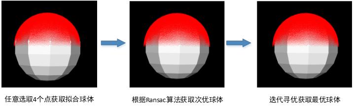
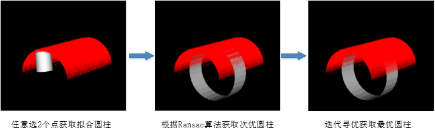
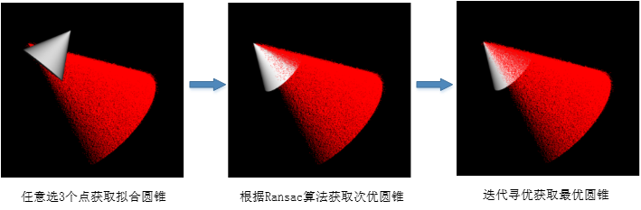
Ví dụ 1: Đo lường 3D - Đo độ dày tản nhiệt VC
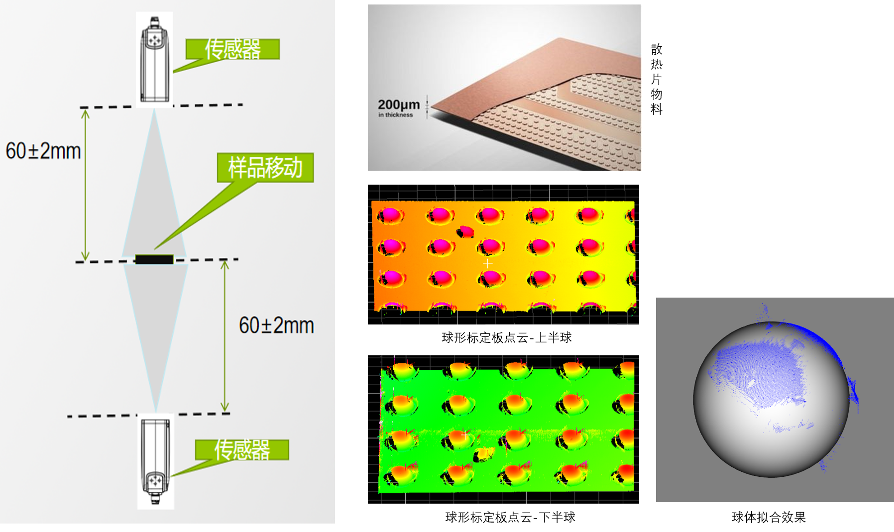
Ví dụ 02: Đo lường 3D - Đo độ dày mặt giữa điện thoại
Ví dụ 03: Đo lường 3D - Đo độ côn lỗ vít linh kiện 3C
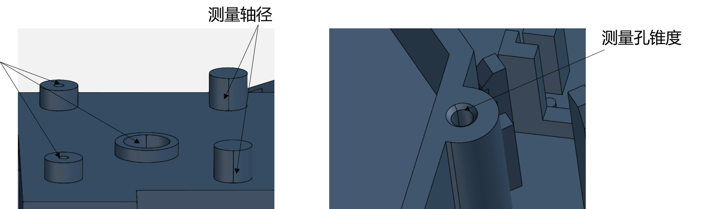
Bước 1: Thêm công cụ khớp hình cầu, hình trụ, hình nón từ đám mây điểm (3 công cụ), sau đó nhấp đúp để mở chuỗi tham số công cụ, liên kết tệp đám mây điểm, như hình 3-1;
Bước 2: Nhấp chuột phải vào công cụ và chọn “Thuộc tính” để mở giao diện nâng cao của công cụ, như hình 3-2;
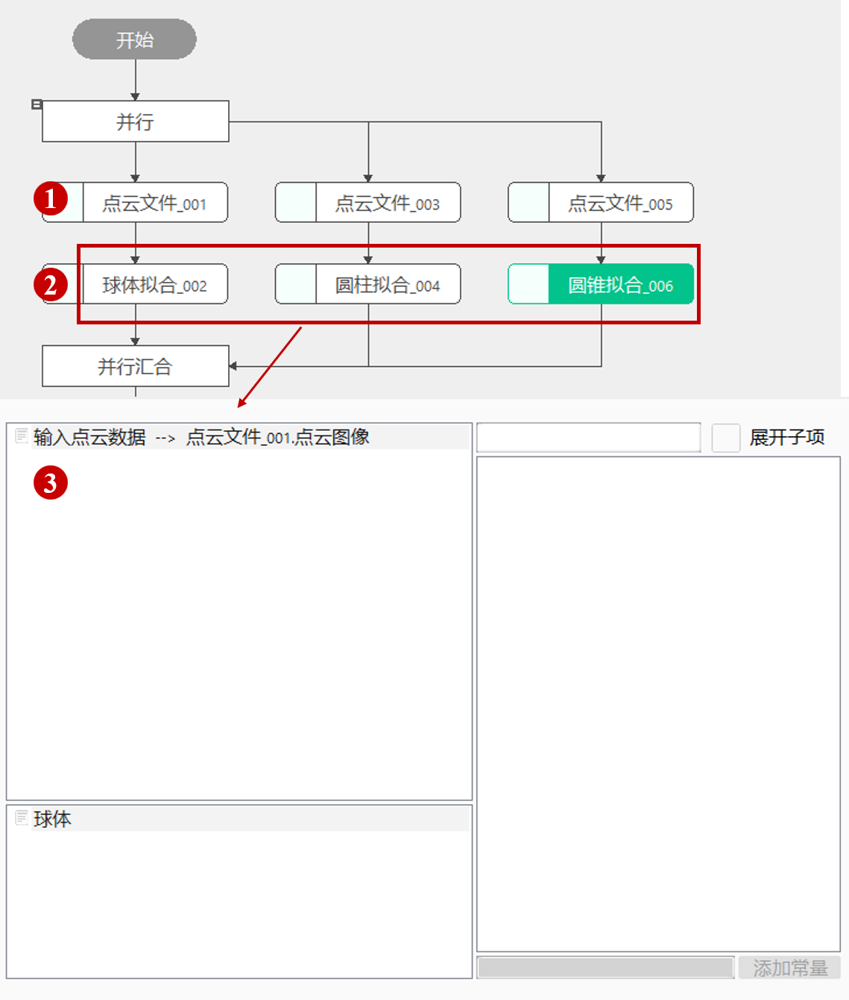
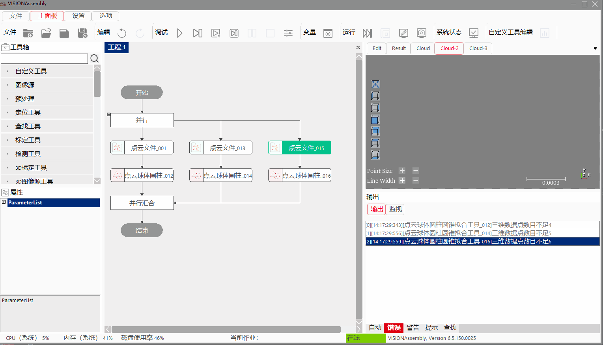
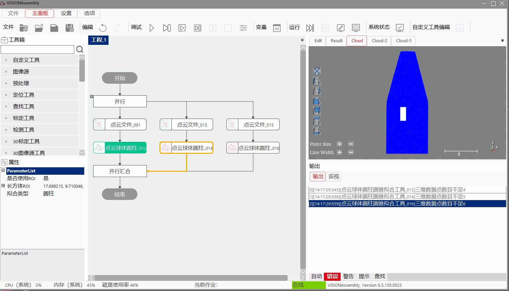
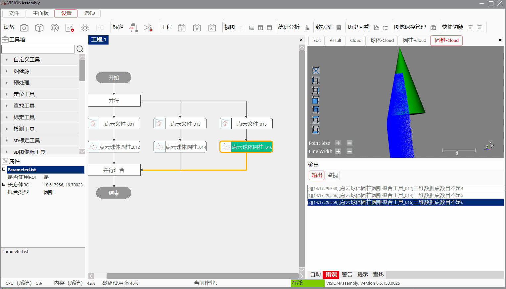
| Tên tham số | Mô tả tham số |
|---|---|
| Dữ liệu đám mây điểm đầu vào | Đầu vào ảnh đám mây điểm cần khớp |
| Tên tham số | Mô tả tham số |
|---|---|
| Có sử dụng ROI hay không | Chọn “Có”, thì sử dụng ROI hình hộp chữ nhật để khớp; chọn “Không”, thì thực hiện khớp toàn bộ đám mây điểm |
| Loại khớp | Chia thành ba loại: hình cầu, hình trụ, hình nón |
| Phương pháp khớp hình cầu | Chia thành hai loại: khớp tối ưu và khớp có điểm ngoại lai |
| Ngưỡng khoảng cách | Giá trị khoảng cách tối đa từ điểm ba chiều đến mặt phẳng khớp, vượt quá ngưỡng sẽ bị coi là điểm ngoại lai, không tham gia tính toán khớp, phạm vi: (0,1000], đơn vị: pixel |
| Mức độ tin cậy | Đo lường mức độ đáng tin cậy của mặt phẳng khớp, mức độ tin cậy càng lớn thì mặt phẳng khớp càng đáng tin, phạm vi: (0,1), đơn vị: phần trăm |
| Tỷ lệ điểm ngoại lai | Tỷ lệ điểm ngoại lai chiếm tổng số điểm ba chiều, phạm vi: [0,1) |
| Bán rộng lấy mẫu | Khoảng cách giữa các điểm ba chiều liền kề sau khi lấy mẫu bằng hai lần khoảng cách lấy mẫu, phạm vi: (0,50], đơn vị: pixel |
Tham số giao diện nâng cao giống với tham số cửa sổ thuộc tính, các nút tương tác như sau:
| Tên nút | Mô tả tham số |
|---|---|
| Vẽ ROI | Trong ảnh giao diện nâng cao, click và kéo chuột tại vị trí tương ứng để vẽ ROI hình hộp chữ nhật |
| Tên tham số | Mô tả tham số |
|---|---|
| Hình cầu | Đầu ra hình cầu đã khớp |
| Hình trụ | Đầu ra hình trụ đã khớp |
| Hình nón | Đầu ra hình nón đã khớp |
| Tên tham số | Mô tả tham số |
|---|---|
| RMS | Giá trị RMS của các điểm dữ liệu tham gia khớp |
| Hình cầu | Hình cầu: Center, tọa độ ba chiều của tâm hình cầu đã khớp Hình cầu: Radius, bán kính của hình cầu đã khớp, đơn vị: mm |
| Hình trụ | Hình trụ: Pos, tọa độ ba chiều của tâm mặt dưới hình trụ đã khớp Hình trụ: Normal, vector trục của hình trụ đã khớp Hình trụ: Radius, bán kính hình tròn đáy của hình trụ đã khớp, đơn vị: mm |
| Hình nón | Hình nón: Apex, góc nửa đỉnh nón của hình nón đã khớp Hình nón: Center, tọa độ ba chiều của đỉnh hình nón đã khớp Hình nón: Radius, bán kính hình tròn đáy của hình nón đã khớp, đơn vị: mm |
| Kết quả thực thi | Kết quả thực thi công cụ |
| Thời gian thực thi | Thời gian thực thi công cụ |
Xem “\Samples\3D\点云\点云球体圆柱圆锥拟合工具.gvp”。
1. Tham số hình cầu: Tâm cầu O(a,b,c)、Bán kính：r
Ý nghĩa hình học của hình cầu：Khoảng cách từ một điểm trên mặt cầu đến tâm cầu bằng bán kính； $$ Phương trình hình cầu：(x-a)2+(y-b)2+(z-c)2=r2 $$
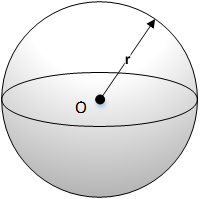
2. Tham số hình trụ：Một điểm Q trên trục (x0,y0,z0)、Vector trục：PN(a,b,c)、Bán kính：r
Ý nghĩa hình học của hình trụ：Điểm Q trên hình trụ, một điểm P trên trục và chân vuông góc N của Q trên trục tạo thành tam giác thỏa mãn định lý Pythagoras； $$ Phương trình hình trụ：(x-x0)2+(y-y0)2+(z-z0)2=[a(x-x0)+b(y-y0)+c(z-z0)]^2+r2 $$
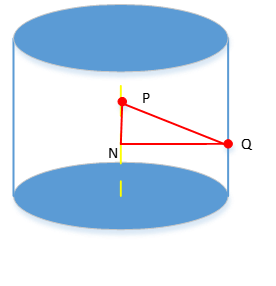
3. Tham số hình nón：Đỉnh P(x0,y0,z0)、Vector trục PN(a,b,c)、Góc nửa đỉnh nón γ
Ý nghĩa hình học của hình nón：Vector PQ tạo bởi đỉnh nón P và bất kỳ điểm Q nào trên hình nón với vector trục PN có góc bằng góc nửa đỉnh nón； $$ Phương trình hình nón：[a(x-x0)+b(y-y0)+c(z-z0)]^2=cos2 𝛾[(𝑥−𝑥0 )2+(𝑦−𝑦0 )2+(𝑧−𝑧_0 )2] $$
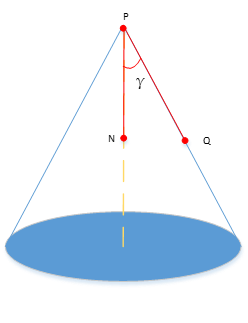
4. Tham số nâng cao của công cụ
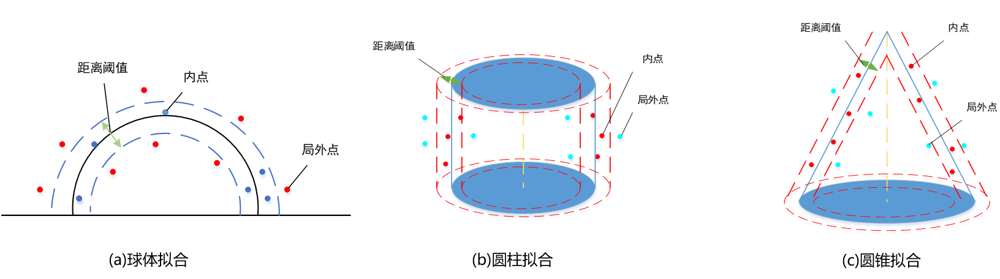
Ngưỡng khoảng cách： chỉ giá trị khoảng cách tối đa từ điểm đến hình cầu, hình trụ và hình nón đã thiết lập； Điểm ngoại lai： chỉ các điểm dữ liệu đám mây điểm có khoảng cách đến hình cầu, hình trụ và hình nón không thỏa mãn ngưỡng khoảng cách； Điểm nội tại： chỉ các điểm dữ liệu đám mây điểm có khoảng cách đến hình cầu, hình trụ và hình nón nằm trong ngưỡng khoảng cách； Tỷ lệ điểm ngoại lai： tỷ lệ điểm ngoại lai chiếm tổng điểm dữ liệu đám mây điểm, trong đó tổng điểm nội tại và điểm ngoại lai bằng tổng điểm dữ liệu đám mây điểm； Mức độ tin cậy： đo lường mức độ đáng tin cậy khi sử dụng điểm nội tại để xây dựng hình cầu, hình trụ và hình nón, mức độ tin cậy càng lớn thì kết quả khớp càng đáng tin cậy.